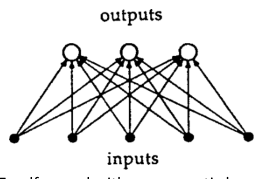
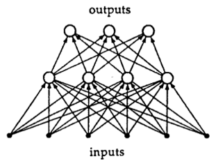
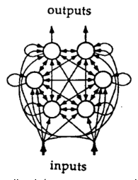

Chương 6 — Tính khả tính thực của mạng nơ-ron
Chương 6
Khả năng tính toán thực của
Mạng nơ-ron
Tiềm năng lý thuyết của tính toán thực có thể được thấy qua ứng dụng của nó vào mạng nơ-ron. Mạng nơ-ron là các mô hình đơn giản hóa của bộ não con người, có tầm quan trọng nền tảng đối với trí tuệ nhân tạo. Trong nhận dạng tiếng nói, năng lực của mạng nơ-ron phụ thuộc vào loại số được dùng để gán trọng số cho các kết nối synap của chúng. Mạng nơ-ron với trọng số số (digital weights) ở mức tốt nhất chỉ tương ứng với các máy Turing, vốn chỉ có thể nhận dạng ngôn ngữ tự nhiên trong chừng mực chúng được cấu trúc theo các quy tắc của văn phạm Chomsky. Mạng nơ-ron với số thực làm trọng số synap tương ứng với các máy tiên tri (oracle machines), về mặt lý thuyết cũng có thể nhận dạng các ngôn ngữ vượt ngoài văn phạm Chomsky. Một lần nữa, các giới hạn và tiềm năng về mặt lý thuyết phụ thuộc vào hình thức toán học được giả định. Làm thế nào các mạng nơ-ron hoặc các máy này có thể được hiện thực hóa về mặt kỹ thuật và vật lý là một câu hỏi thực nghiệm (xem Chương 13 và 14).
Khả năng tính toán Turing đã được hiện thực hóa về mặt kỹ thuật bởi các máy tính von Neumann với một bộ xử lý và một bộ nhớ tách biệt. Kiến trúc tính toán này được xây dựng bằng công nghệ bán dẫn silicon. Sức mạnh tính toán của nó có thể tăng theo cấp số nhân, nhưng đi kèm với chi phí năng lượng khổng lồ trên toàn thế giới. Trái ngược với công nghệ, trong quá trình tiến hóa, năng lực nhận thức được gia tăng nhờ các bộ não và mạng nơ-ron có hiệu suất cao và tiêu tốn ít năng lượng. Chúng ta có thể chứng minh rằng chiến lược tiến hóa của mạng nơ-ron và chiến lược kỹ thuật của máy tính (von Neumann), ít nhất về nguyên tắc, là tương đương nhau về mặt logic-toán học. Điều đó có nghĩa là, đối với (hầu hết) mọi mạng nơ-ron có mức độ phức tạp và hiệu suất nhất định, chúng ta có thể
105
106 Trí tuệ nhân tạo của các hệ thống mô phỏng thần kinh tìm thấy một ô-tô-mát hoặc máy tính tương đương với cùng các năng lực đó (ví dụ: nhận dạng ngôn ngữ) và ngược lại.
Các mạng nơ-ron tự nhiên của bộ não sống được mô hình hóa bằng toán học thông qua mạng nơ-ron nhân tạo. Chúng là những hệ thống phức tạp gồm các nơ-ron phát xung và không phát xung với các cấu trúc tô-pô tương tự như bộ não (Hình 1). Không có bộ xử lý trung tâm (“tế bào mẹ”), mà chỉ có dòng thông tin tự tổ chức trong các tập hợp tế bào tuân theo các quy tắc về

Truyền thẳng với một lớp synap

Truyền thẳng với hai lớp synap (các đơn vị ẩn)

Phản hồi (mạng hồi quy)
Hình 1. Các cấu trúc tô-pô của mạng nơ-ron.
Nguồn: Mainzer (2018, tr. 242).
Khả năng tính toán thực của Mạng nơ-ron 107
trọng số synap (“tính dẻo synap”) (Churchland và Sejnowski, 1992; Mainzer, 1994, 1997). Về mặt toán học, chúng ta bắt đầu với các mạng kích thước hữu hạn, bao gồm các kết nối của những bộ xử lý tiến hóa đồng bộ. Mỗi bộ xử lý cập nhật trạng thái của nó bằng một hàm sigmoid, được áp dụng lên một tổ hợp tuyến tính của các trạng thái trước đó của tất cả các đơn vị. Độ mạnh của các kết nối synap giữa các nơ-ron được biểu diễn bằng các trọng số số học.
Thoạt nhìn, mạng nơ-ron có vẻ hoàn toàn khác với máy móc và ô-tô-mát. Mạng nơ-ron được hiểu là mô hình của bộ não tự nhiên. Máy móc và ô-tô-mát là sản phẩm của công nghệ con người. Nhưng thực tế, ô-tô-mát và máy móc có thể được tạo ra theo một hệ thống phân cấp gồm các nguyên mẫu ít nhiều phức tạp, tương ứng với các mô hình mạng nơ-ron phù hợp có khả năng nhận dạng các loại ngôn ngữ khác nhau. Về mặt toán học, độ phức tạp và năng lực ngày càng tăng của mạng nơ-ron phụ thuộc vào các trọng số số học, trải dài từ số nguyên và số hữu tỷ đến số thực. Đây là một kết quả đáng chú ý, bởi vì “bộ não” và “máy móc” phù hợp tương đương nhau theo một nghĩa toán học chặt chẽ.
Định nghĩa về Mạng nơ-ron (Hồi quy Kích thước Hữu hạn)
Một mạng nơ-ron (hồi quy) N được biểu diễn bằng một đồ thị có hướng gồm các nút gọi là nơ-ron. Mỗi nơ-ron cập nhật giá trị kích hoạt của nó bằng cách áp dụng hợp thành của một hàm một biến và một tổ hợp tuyến tính của các mức kích hoạt của tất cả các nơ-ron xj(j = 1, . . . , N), các đầu vào bên ngoài uk(k = 1, . . . , M), và các trọng số synap có hệ số hữu tỷ aij, bij, ci. Một cách hình thức, trạng thái (tế bào) của mỗi bộ xử lý được cập nhật bởi
⎛
⎞
N
M
⎝
⎠, xi(t + 1) = σ aijxj(t) + bijuj(t) + ci j=1 j=1 với xi là các trạng thái kích hoạt, uj là các đầu vào ở các thời điểm trước đó, các trọng số synap aij, bij, ci, và hàm sigmoid (ví dụ: tuyến tính bão hòa)
108 Trí tuệ nhân tạo của các hệ thống mô phỏng thần kinh σ:
⎧ ⎪ ⎨
0, nếu x < 0, x, nếu 0 ≤x ≤1, σ(x) :=
⎪ ⎩
1, nếu x > 1.
Một mạng nơ-ron có thể được hiểu như một hệ động lực. Động lực học của chúng được xác định bởi những thay đổi phụ thuộc thời gian trong trạng thái hệ thống của chúng. Tại mỗi thời điểm, trạng thái hệ thống được biểu diễn bằng một vectơ x(t) ∈QN gồm các số hữu tỷ, với tọa độ thứ i biểu thị mức độ kích hoạt của bộ xử lý thứ i. Cho trước một trạng thái ban đầu x(1) và một chuỗi đầu vào vô hạn u = u(1), u(2), . . . , trạng thái động lực học x(t) tại thời điểm t có thể được tính toán cho mỗi số nguyên t ≥1 như là giá trị thu được bằng cách giải đệ quy phương trình cập nhật trạng thái bộ xử lý đã định nghĩa trước đó.
Việc một hàm được tính toán bởi mạng nơ-ron (thay vì bởi một cái máy) có nghĩa là gì? Chúng ta xét một hàm Φ: {0, 1}∗→{0, 1}∗ với nửa nhóm {0, 1}∗của các chuỗi nhị phân (Siegelman và Sontag, 1995). Một mạng hình thức phù hợp phải biến đổi các chuỗi đầu vào nhị phân thành các chuỗi đầu ra nhị phân. Một mạng hình thức như vậy được trang bị hai đường đầu vào nhị phân, được gọi là đường dữ liệu và đường xác thực. Đường dữ liệu mang tín hiệu đầu vào nhị phân, D. Đường xác thực chỉ ra khi nào đường dữ liệu hoạt động với V = 1 và khi nào không hoạt động với V = 0. Do đó, đối với mỗi t, đầu vào u(t) được định nghĩa là u(t) = (D(t), V (t)) ∈{0, 1}2.
Trạng thái ban đầu x(1) luôn được lấy bằng không và là một trạng thái cân bằng. Đầu ra được biểu diễn bởi hai bộ xử lý đầu ra đóng vai trò đường dữ liệu và đường xác thực, ký hiệu là H và G:
y(t) = (H(t), G(t)) ∈{0, 1}2.
Nói chung, động lực học (thời gian rời rạc) của các trạng thái hệ thống với hai đầu vào nhị phân được mô tả bởi ánh xạ F: QN × {0, 1}2 →QN. Trạng thái x(t) tại thời điểm t (với mỗi số nguyên t ≥1) được định nghĩa bằng cách đệ quy
Khả năng tính toán thực của Mạng nơ-ron 109
giải các phương trình x(1) := xinit, x(t + 1) := F(x(t), u(t)) (t = 1, 2, . . .).
Định nghĩa về mạng σ-Bộ xử lý N với Đầu vào Nhị phân
Một mạng σ-bộ xử lý N với hai đầu vào nhị phân là một hệ động lực với ánh xạ
F(x, u) = σ(Ax + b1u1 + b2u2 + c)
với ma trận A ∈QN×N, các vectơ b1, b2, c ∈QN, và hàm sigmoid σ: QN →QN.
Sự tương đương của Ô-tô-mát Hữu hạn và Mạng nơ-ron với Trọng số Nguyên
Năm 1956, S. C. Kleene đã đưa ra một chứng minh về sự tương đương giữa ô-tô-mát và mạng nơ-ron: Ô-tô-mát hữu hạn có thể được mô phỏng bởi các mạng McCulloch–Pitts nhận dạng các ngôn ngữ chính quy đơn giản (Kleene, 1956). Mạng McCulloch–Pitts dựa trên một hàm kích hoạt nhị phân, signal(x), bằng 0 nếu x ≤0 và bằng 1 nếu ngược lại. Một loại khác là hàm Heaviside, cho giá trị 1 ngay cả với giá trị đầu vào bằng 0. Rõ ràng, mạng McCulloch–Pitts đại diện cho một loại “bộ não” đơn giản. Một mạng hữu hạn gồm các phần tử hai trạng thái tương đương với hoạt động của các ô-tô-mát hữu hạn. Ô-tô-mát hữu hạn cũng là những ví dụ đơn giản về ô-tô-mát, vốn được hiện thực hóa về mặt kỹ thuật, chẳng hạn, bởi các máy bán vé tự động tại các nhà ga đường sắt (Minsky, 1967).
Định nghĩa về Ô-tô-mát Hữu hạn
Một ô-tô-mát hữu hạn (Q, Σ, f, qo, F) bao gồm một tập hợp hữu hạn Q các trạng thái, một tập hợp hữu hạn Σ các đầu vào, một trạng thái ban đầu qo, các trạng thái chấp nhận F ⊆Q, và một hàm chuyển tiếp f: Q × Σ →Q. Đối với bất kỳ trạng thái q và đầu vào
110 Trí tuệ nhân tạo của các hệ thống mô phỏng thần kinh a nào, trạng thái tiếp theo được ký hiệu là f(q, a). Đối với các trạng thái chấp nhận q ∈F, ta có f(q, a) = q.
f ∗là một mở rộng của hàm chuyển tiếp f, ánh xạ một trạng thái và một chuỗi ký hiệu tới trạng thái kết quả:
q, nếu ω = ϵ(rỗng), f ∗(q, ω) := f(f ∗(q, ω′), a), nếu ω = ω′a, với một ký hiệu a ∈Σ và các chuỗi ω, ω′ ∈Σ∗.
Định nghĩa về Ô-tô-mát Hữu hạn Chấp nhận một Ngôn ngữ
Một chuỗi ω được gọi là được chấp nhận bởi một ô-tô-mát hữu hạn M khi và chỉ khi f ∗(qo, ω) ∈F.
Ngôn ngữ L(M) ⊆Σ∗được chấp nhận bởi M là tập hợp tất cả các chuỗi được chấp nhận.
Một ngôn ngữ là chính quy khi và chỉ khi nó được chấp nhận bởi một ô-tô-mát hữu hạn nào đó. Mạng lưới trở nên mạnh mẽ hơn nếu các nơ-ron Boolean với trạng thái nhị phân được thay thế bằng các nơ-ron có giá trị tương tự trong khoảng [0, 1]. Khi các trọng số bị giới hạn ở số nguyên, các nơ-ron tương tự bị rút gọn về các kích hoạt nhị phân. Trong trường hợp này, các mạng tương đương về mặt tính toán với mạng McCulloch–Pitts (Siegelmann, 1999, tr. 25f.).
Định lý. Các ngôn ngữ được chấp nhận bởi các mạng số nguyên chính xác là các ngôn ngữ chính quy trên bảng chữ cái {0, 1}.
Sự tương đương của Máy Turing và Mạng nơ-ron với Trọng số Hữu tỷ
Tiếp theo, có thể chứng minh rằng mọi máy Turing đều có thể được mô phỏng bởi các mạng nơ-ron với số hữu tỷ làm trọng số và ngược lại. Cụ thể, Siegelmann và Sontag (1995a) đã chứng minh rằng một mạng gồm 886 bộ xử lý có thể tính toán một hàm đệ quy từng phần phổ quát trong thời gian khả thi. Không cần đến các mạng bậc cao với phép nhân. Các máy Turing không tất định có thể được mô phỏng bởi các mạng không tất định, mà trọng số synap của chúng cũng là các số hữu tỷ hữu hạn. Rõ ràng, những kết quả mô phỏng này có các hệ quả logic
Khả năng tính toán thực của Mạng nơ-ron 111
và nhận thức luận liên quan đến tính khả quyết và độ phức tạp của việc giải quyết vấn đề. Cuối cùng, chúng ta quan tâm đến tác động của khả năng tính toán số và tính toán thực đối với mạng nơ-ron.
Rõ ràng là một mạng bộ xử lý với trạng thái ban đầu hữu tỷ có thể được mô phỏng bởi một máy Turing. Về mặt trực giác, kết quả lý thuyết này tương ứng với thực tiễn tính toán rằng các mạng nhân tạo được mô phỏng bởi các máy tính (von Neumann). Chiều ngược lại tham vọng hơn nhiều: Bất kỳ hàm nào tính được bởi một máy Turing đều có thể được tính bởi một mạng bộ xử lý với các trọng số hữu tỷ. Nếu chúng ta hiểu các mạng như là mô hình của bộ não tự nhiên, thì kết quả này xác định loại bộ não (tối thiểu) cần thiết để thực hiện các phép tính Turing. Sau này, các khả năng của công nghệ tương lai sẽ được thảo luận nhằm xây dựng các kiến trúc mô phỏng thần kinh của máy tính tương ứng với bộ não sống.
Sự tương đương của Máy Tiên tri Turing và Mạng nơ-ron với Trọng số Thực
Mạng nhân tạo với trọng số hữu tỷ là các mô hình của khả năng tính toán Turing. Mạng sinh học với các cảm biến và synap được đặc trưng bởi tỷ lệ phân bậc (graded scaling). Do đó, mạng nơ-ron với trọng số thực đã thu hút nhiều sự chú ý như là các mô hình của tính toán tương tự. Trong kỹ thuật và khoa học tự nhiên, số thực tương ứng với các giá trị của điện trở, điện dung, hằng số vật lý, v.v. Số thực có thể không đo đạc trực tiếp được, và chúng không phải lúc nào cũng tính toán được. Nhưng chúng ảnh hưởng đến hành vi của một hệ động lực. Trên một khoảng thời gian hữu hạn, các hằng số có thể được thay thế bằng các số hữu tỷ tạo ra cùng một hành vi định tính. Nhưng hành vi dài hạn của hệ thống lại phụ thuộc vào các giá trị thực của các hằng số. Một minh họa nổi tiếng khác là hiệu ứng cánh bướm: sự phụ thuộc nhạy cảm của động lực học hỗn loạn vào những thay đổi cực nhỏ trong các giá trị ban đầu. Tác động của tính toán thực đối với các mạng tương tự là gì?
Định nghĩa về Mạng (Hồi quy) Thực
Một mạng nơ-ron (hồi quy) thực N được biểu diễn bởi một đồ thị có hướng gồm các nút gọi là nơ-ron, tương tự như mạng nơ-ron (hồi quy) hữu tỷ
112 Trí tuệ nhân tạo của các hệ thống mô phỏng thần kinh nhưng với trọng số thực thay vì trọng số hữu tỷ. Trạng thái (tế bào) của mỗi bộ xử lý được cập nhật bởi một phương trình tương ứng dưới dạng vectơ. Để đơn giản về mặt ký hiệu, “x(t + 1)” được thay thế bằng “x+(t)” và lược bỏ đối số t:
x+ = σ(Ax + Bu + c), với vectơ x có kích thước N (số lượng bộ xử lý), vectơ u có kích thước M (số lượng đầu vào), vectơ N chiều c, các ma trận thực A, B có kích thước lần lượt là N × N và M × M, và hàm sigmoid σ.
Một tập con xi1, . . . , xp gồm p bộ xử lý trong số N bộ xử lý đóng vai trò là các bộ xử lý đầu ra được sử dụng để giao tiếp với môi trường của mạng. Nói ngắn gọn, một mạng được đặc trưng bởi dữ liệu thực (A, B, c) cùng với một tập con các nút của nó.
Các mạng này có thể được biểu diễn dưới dạng các hệ động lực có trạng thái tại mỗi thời điểm giờ đây là một vectơ thực x(t) ∈RN. Tọa độ thứ i của vectơ này biểu thị mức kích hoạt của bộ xử lý thứ i tại thời điểm t. Trạng thái x(t) tại thời điểm t có thể thu được, với mỗi giá trị t ≥1, bằng cách giải đệ quy phương trình cập nhật cho trạng thái ban đầu x(1) và một chuỗi đầu vào vô hạn u = u(1), u(2), . . .. Đầu ra được tạo bởi đầu vào u cho trạng thái ban đầu x(1) đề cập đến chuỗi các giá trị đầu ra trong các bộ xử lý đầu ra.
Một năng lực thiết yếu của bộ não và mạng lưới là nhận dạng và tính toán các ngôn ngữ. Mạng McCulloch–Pitts rất đơn giản với các trọng số hữu hạn cố định. Chúng tương đương với ô-tô-mát hữu hạn và chỉ có thể nhận dạng các ngôn ngữ chính quy. Chúng ta có thể xem xét một hệ thống phân cấp gồm các mạng và ô-tô-mát với năng lực tăng dần lên đến máy Turing, vốn tương đương với các mạng có trọng số hữu tỷ. Chúng có thể nhận dạng các ngôn ngữ đệ quy thuộc loại Chomsky. Mạng nơ-ron thực thậm chí có thể nhận dạng trong thời gian đa thức cùng một lớp ngôn ngữ như các máy Turing tham vấn một tiên tri (thưa) trong thời gian đa thức. Chúng có thể nhận dạng mọi ngôn ngữ, bao gồm cả những ngôn ngữ không tính toán được, trong thời gian hàm mũ. Đây là một hiểu biết sâu sắc về mặt nhận thức luận, và chúng ta sẽ quay lại các khía cạnh triết học của nó ở phần sau.
Làm thế nào chúng ta có thể định nghĩa một cách hình thức rằng một mạng nhận dạng một ngôn ngữ? Để đơn giản, một ngôn ngữ được hiểu là một tập hợp L ⊆{0, 1} các từ
Khả năng tính toán thực của Mạng nơ-ron 113
(chuỗi bit), có thể được hiểu là mã số cho bất kỳ loại thông tin nào. Trước khi định nghĩa thế nào là một mạng nhận dạng một ngôn ngữ L, trước tiên chúng ta phải định nghĩa một mạng hình thức có khả năng mã hóa đầu vào và đầu ra của nó. Một lần nữa, chúng ta định nghĩa các mạng hình thức với hai đường đầu vào nhị phân cho dữ liệu và xác thực tại mỗi thời điểm t:
u(t) = (D(t), V (t)) ∈{0, 1}2.
Trạng thái ban đầu x(1) được lấy bằng không và là một trạng thái cân bằng:
σ(A0 + B0 + c) = σ(c) = 0.
Hai bộ xử lý đầu ra Od(t), Ov(t) cũng được lấy làm đường dữ liệu và đường xác thực tương ứng.
Đối với mỗi từ ω = ω1 · · · ωk ∈{0, 1}∗, đầu vào được mã hóa bởi uω(t) = (Vω(t), Dω(t)) (t = 1, . . . , ),
1, nếu t = 1, . . . , k, với Vω(t) =
0, nếu ngược lại ωk, nếu t = 1, . . . , k, và Dω(t) =
0, nếu ngược lại.
Định nghĩa về Mạng nơ-ron Nhận dạng Ngôn ngữ
Trong một mạng hình thức N với hai đầu vào, một từ ω được phân loại trong thời gian τ khi và chỉ khi chuỗi đầu ra y(t) = (Od(t), Ov(t)) được tạo ra bởi đầu vào uω khi bắt đầu từ x(1) = 0 có dạng
Od = 0 · · · 0
ηω000 · · ·, Ov = 0 · · · 0
1000 · · ·, τ−1 τ−1 với ηω = 0 hoặc 1.
Một ngôn ngữ L ⊆{0, 1}∗được nhận dạng trong thời gian T bởi mạng N với điều kiện là mỗi từ ω ∈{0, 1}∗được phân loại trong thời gian τ ≤T(|ω|) xem ω ∈L hay không, trong đó T:N →N là một hàm trên các số tự nhiên.
Để mô phỏng mạng nơ-ron bằng máy móc, các mạch được xem xét để mô hình hóa về mặt logic các phần tử chuyển mạch của máy tính kỹ thuật. Các họ mạch không đồng nhất là các tập hợp mạch không
114 Trí tuệ nhân tạo của các hệ thống mô phỏng thần kinh nhất thiết phải được mô tả một cách đệ quy. Do đó, chúng có thể vượt qua khả năng tính toán cổ điển.
Định nghĩa về Mạch Boolean
Một mạch Boolean là một đồ thị có hướng không chu trình với các nút đầu vào có bậc vào bằng 0 và các nút cổng được gán nhãn bởi một trong các hàm Boolean AND, OR, hoặc NOT. Một trong các nút, vốn không có cạnh đi ra, được gọi là nút đầu ra.
Các nút được sắp xếp thành các tầng 0, 1, . . . , d, trong đó các nút đầu vào ở tầng 0, tầng đầu ra là tầng d, và mỗi nút chỉ có các cạnh đi vào từ tầng ngay trước đó.
Một nút cổng tính toán hàm Boolean tương ứng của các giá trị từ tầng trước, và giá trị thu được được coi là đầu vào để tầng kế tiếp sử dụng. Bằng cách này, mỗi mạch tính toán một hàm Boolean của các đầu vào của nó:
• Kích thước của mạch là tổng số cổng. • Độ sâu của mạch là d. • Độ rộng của mạch là kích thước tối đa của mỗi tầng.
Định nghĩa về Họ Mạch
Một họ C = {cn|n ∈N} các mạch là một tập hợp các mạch cn với kích thước SC(n), độ sâu DC(n), và độ rộng WC(n) đối với n = 1, 2, . . . là các hàm đơn điệu không giảm.
Một ngôn ngữ L ⊆{0, 1}∗được gọi là được tính bởi một họ C = {cn|n ∈N} các mạch khi và chỉ khi hàm đặc trưng của L ∩{0, 1}n được tính bởi cn với mỗi n ∈N.
Nếu ngôn ngữ L được nhận dạng bởi mạng hình thức N trong thời gian T, ta viết ΦN = L và TN = T. Nếu ngôn ngữ L được tính bởi họ C các mạch, ta viết ΦC = L. Có thể chứng minh rằng các họ mạch có thể được mô phỏng bởi các mạng và ngược lại xét về khả năng nhận dạng ngôn ngữ trong thời gian đa thức. Do đó, sau đây, các hàm TN và ΦC đối với mạng hình thức và mạch được so sánh sao cho ΦN = ΦC (Siegelmann và Sontag, 1994).
Khả năng tính toán thực của Mạng nơ-ron 115
Định lý. Gọi NET(T(n)) là lớp các ngôn ngữ được nhận dạng bởi các mạng hình thức có trọng số thực trong thời gian T(n) và CIRCUIT(S(n)) là lớp các ngôn ngữ được nhận dạng bởi các họ mạch (không đồng nhất) có kích thước S(n).
Với bất kỳ hàm F nào thỏa F(n) ≥n, ta suy ra:
(1) CIRCUIT(F(n)) ⊆NET(nF 2(n)), (2) NET(F(n)) ⊆CIRCUIT(F 3(n)).
Để chứng minh (1), các họ mạch được mô phỏng bởi các mạng. Do đó, một mạng phổ quát cố định với khoảng N = 1000 bộ xử lý được xây dựng. Nó có thể mô phỏng toàn bộ một họ mạch, vốn được mã hóa bởi một trọng số thực cụ thể của mạng.
Định lý. Mô phỏng các họ mạch bằng mạng.
Tồn tại một số nguyên dương N sao cho tính chất sau đây đúng: Với mỗi họ mạch C có kích thước SC(n), tồn tại một mạng hình thức N-bộ xử lý N = N(C) sao cho ΦN = ΦC và TN (n) = O(nS2
C(n)). Giả sử C là một họ mạch có kích thước SC(n). Mạng cần thiết N = N(C) được xây dựng từ ba mạng:
• Một mạng đầu vào NI nhận đầu vào u1 = ω00 · · · , u2 = 11 · · · 1
00 · · · ,
|ω| và tính toán các số mã của u1 (với từ ω) và u2 cho mỗi ω ∈{0, 1}∗. • Một mạng truy xuất NR(c) nhận số mã của u2 từ mạng đầu vào NI và tính toán số mã của mạch c|ω|. • Một mạng mô phỏng NS(c) nhận số mã của mạch c|ω| và từ ω rồi tính toán x0 = 00 · · · 0
ΦC(ω)00 · · · , 00 · · · 0
100 · · · .
T
T
116 Trí tuệ nhân tạo của các hệ thống mô phỏng thần kinh
Mã hóa Họ Mạch C
Một mạch c có kích thước s, độ rộng w, và wi cổng ở tầng thứ i được mã hóa thành một chuỗi hữu hạn trên bảng chữ cái {0, 2, 4, 6} theo các bước sau:
(i) Việc mã hóa ở mỗi tầng i bắt đầu bằng chữ số 6. Các tầng được mã hóa liên tiếp, bắt đầu từ tầng đáy và kết thúc ở tầng đỉnh. (ii) Ở mỗi tầng, các cổng được mã hóa liên tiếp. Mã hóa của cổng g bao gồm một ký hiệu bắt đầu, một mã hai chữ số cho loại cổng, và một mã chỉ ra cổng nào cấp đầu vào cho nó:
• Nó bắt đầu bằng chữ số 0. • Một chuỗi hai chữ số {42, 44, 22} biểu thị loại cổng {AND, OR, NOT}. • Nếu cổng g nằm ở tầng i, thì đầu vào của g được biểu diễn như một chuỗi trong {2, 4}wi−1, sao cho vị trí thứ j trong chuỗi là 4 khi và chỉ khi cổng thứ j của tầng thứ (i −1) cấp đầu vào cho cổng g.
Ví dụ:
OR
AND OR NOT
I1 I2 I3
Mạch c1 trong hình trên được mã hóa thành
en[c1] = 6 0 42 AND
444 I1,I2,I3 cấp vào g1
0 44
424 I1,I3 cấp vào g2
0 22 NOT
242 I2 cấp vào g3
OR
6 0 44
444 AND,OR,NOT cấp vào g4
.
OR
Khả năng tính toán thực của Mạng nơ-ron 117
Một họ mạch không đồng nhất C có kích thước S(n) được mã hóa thành một chuỗi vô hạn:
e(C) = 8 en[c1]8 en[c2]8 en[c3] · · · , với en[ci], mã hóa của ci, theo thứ tự đảo ngược.
Xét một chuỗi hữu hạn hoặc vô hạn r = r1r2 · · · gồm các số tự nhiên nhỏ hơn một số tự nhiên b. Cách diễn giải chuỗi r trong cơ số b là số
∞ ri bi .
r|b := i=1
Phép mã hóa là một-một đối với các chuỗi được sử dụng trong chứng minh. Mã trước đó của họ mạch C có thể được diễn giải trong cơ số b = 9 là
ˆC := 8 en[c1]8 en[c2]8 en[c3] · · · |9.
Mã hóa en[ci] của mạch thứ i trong họ C được diễn giải trong cơ số 9 được ký hiệu là en[ci].
Một số mã hóa một họ mạch là một số trong đoạn [0, 1], nhưng không phải mọi số trong [0, 1] đều có thể là một số mã thuộc loại này. Nếu chữ số đầu tiên bên phải dấu thập phân là 0, thì giá trị của mã hóa nằm trong [0, 1
9]; nếu là 2, giá trị nằm trong [2
9, 3 9]; v.v. Nói chung, số đó không thể nằm trong bất kỳ khoảng nào có dạng [(2i −1)/9, 2i/9] với i = 1, 2, 3, 4. Tập hợp các giá trị khả dĩ là một tập Cantor không liên tục và chứa các lỗ hổng. Tập Cantor có tính tự đồng dạng với các phép dịch bit (trong cơ số 9) bảo toàn các lỗ hổng, như được minh họa trong Hình 2.
Cấu trúc của tập Cantor phân biệt rõ ràng các số tách biệt nhau mã hóa cho mạch mong muốn. Mạch có thể được truy xuất thông qua các phép toán có độ chính xác hữu hạn và một số lượng nơ-ron hữu hạn.
Bây giờ, mạng truy xuất NR(c) và mạng mô phỏng NS(c) có thể được xây dựng.
Đối với một chuỗi nhị phân ω ∈{0, 1}n, mã hóa en[ω] biểu thị chuỗi từ {2, 4}n thay thế (2ωi + 2) cho mỗi ωi. Cách diễn giải mã hóa en[ω] trong cơ số 9 được ký hiệu là en[ω] = en[ω]|9.
118 Trí tuệ nhân tạo của các hệ thống mô phỏng thần kinh
0 1/9 2/9 3/9 4/9 5/9 6/9 7/9 8/9 1
Hình 2. Mã hóa mạch dưới dạng một tập Cantor.
Nguồn: Mainzer (2018, tr. 257).
Tồn tại một mạng NS sao cho với mỗi mạch c và chuỗi nhị phân ω, khi bắt đầu từ trạng thái ban đầu và áp dụng tín hiệu đầu vào u1 = en[c]00 · · · , u2 = en[ω]00 · · · , mạng mô phỏng NS(c) xuất ra xd = 00 · · · 0 y00 · · · , xv = 00 · · · 0
100 · · · ,
T
T
trong đó y là phản hồi của mạch c trên đầu vào ω, với T = O(l(c) + |α|.
Mạng mô phỏng NS(c) của họ mạch c được xây dựng theo hai bước:
(i) Bất kỳ mạch nào cũng có thể được mô phỏng bởi một máy Turing ba băng trong thời gian O(l(c) + |ω|). Ba băng được dùng để lưu trữ mã hóa mạch, mã hóa đầu vào và đầu ra, và tính toán tầng hiện tại. (ii) Máy Turing ba băng có thể được mô phỏng bởi một mạng. Nói chung, nếu M là một máy Turing k băng với s trạng thái tính toán trong thời gian T một hàm f trên các chuỗi đầu vào nhị phân, thì tồn tại một mạng hữu tỷ N. Mạng này gồm 9ks+ s + 28k + 2 bộ xử lý tính toán cùng hàm f đó trong thời gian O(T).
Khả năng tính toán thực của Mạng nơ-ron 119
Với việc xây dựng mạng truy xuất NR(c) và mạng mô phỏng NS(c), chứng minh của Định lý (1) hoàn tất. Trong số ba mạng dùng cho đầu vào, truy xuất và mô phỏng, chỉ có mạng truy xuất NR phụ thuộc vào họ mạch C cụ thể. Tất cả các trọng số đều có thể được lấy là số hữu tỷ, ngoại trừ trọng số mã hóa toàn bộ họ mạch.
Độ phức tạp thời gian T để tính toán phản hồi của C đối với đầu vào ω được xác định bởi mô tả của các mạch cần thiết. Một cách hình thức, độ phức tạp có bậc là
⎛
⎞
|ω|
⎝
⎠.
T = O
l(ci)
i=1
Độ dài của mã hóa l(ci) có bậc O(WC(i)SC(i)) = O(S2
C(i)). Rõ ràng, SC(i) ≤SC(i + 1) với i = 1, 2, . . .. Do đó, ta thu được cận đa thức đã khẳng định T = O(|ω|S2
C(|ω|)). Phép mô phỏng ngược lại các mạng bằng các họ mạch không đồng nhất được phát biểu trong Định lý (2) (Siegelmann và Sontag, 1994).
Định lý. Mô phỏng mạng bằng các họ mạch.
Giả sử N là một mạng hình thức tính toán trong thời gian T: N →N. Tồn tại một họ mạch không đồng nhất C(N) có kích thước O(T 3), độ sâu O(Tlog(T)), và độ rộng O(T 2) chấp nhận cùng ngôn ngữ như N.
Định lý (2) được chứng minh qua hai phần:
(2.1) Mạng hình thức N được thay thế bởi một họ các mạng hình thức có các trọng số hữu tỷ nhỏ hơn. (2.2) Họ các mạng hình thức được mô phỏng bởi một họ các mạch.
Đối với các chứng minh này, cần có một số định nghĩa.
Định nghĩa về Mạng Chỉ định Đầu ra
• Một bộ xử lý được gọi là bộ xử lý đầu ra được chỉ định khi và chỉ khi giá trị kích hoạt của nó được dùng làm đầu ra của mạng và không được đưa vào bất kỳ bộ xử lý nào khác.
120 Trí tuệ nhân tạo của các hệ thống mô phỏng thần kinh
• Một mạng hình thức có hai bộ xử lý đầu ra được chỉ định được gọi là một mạng chỉ định đầu ra. • Các bộ xử lý của nó mà không phải là bộ xử lý đầu ra được chỉ định được gọi là các bộ xử lý nội bộ.
Việc mô phỏng mạng bằng mạch Boolean và ngược lại cũng có thể được chứng minh cho các mạch ngưỡng. Trong trường hợp này, các hàm Boolean AND, OR, hoặc NOT được tính bởi mỗi nút được thay thế bằng một hàm ngưỡng tuyến tính. Mỗi cổng i tính toán fi: Bni →B với các giá trị Boolean B = {0, 1}. Việc cập nhật kích hoạt của hàm ngưỡng (tuyến tính) được định nghĩa bởi
⎛
⎞ ni
⎝
⎠, xi(t + 1) = fi(xi1, xi2, . . . , xin) := H aijxij(t) + ci j=1 với các mức kích hoạt xij của các bộ xử lý cấp đầu vào cho nó, các hằng số nguyên aij và ci gắn với cổng, và hàm ngưỡng
1, nếu z ≥0,
H(z) =
0, nếu z < 0.
Mạch ngưỡng và mạch Boolean được biết là tương đương đa thức về kích thước.
NET(T(n)) đã được định nghĩa là lớp tất cả các ngôn ngữ được nhận dạng bởi các mạng hình thức có trọng số thực trong thời gian T(n). Tương tự, các ngôn ngữ được nhận dạng bởi mạch ngưỡng có thể được định nghĩa là
T-CIRCUIT(S(n)) := lớp các ngôn ngữ được nhận dạng bởi các họ (không đồng nhất)
của mạch ngưỡng có kích thước S(n).
Việc mô phỏng mạng bằng mạch và ngược lại không chỉ có thể chứng minh cho mạch Boolean mà còn cho cả mạch ngưỡng.
Định lý. Mô phỏng với mạch ngưỡng
Với bất kỳ hàm F nào với F(n), ta suy ra:
(1) T-CIRCUIT(F(n)) ⊆NET(nF 3(n) log F(n))), (2) NET(F(n)) ⊆T-CIRCUIT(F 2(n)).
Khả năng tính toán thực của Mạng nơ-ron 121
Hệ quả (1) được chứng minh tương tự như trường hợp mạch Boolean: Mỗi cổng ngưỡng được mã hóa theo cách giống tập Cantor, bao gồm cả mô tả về các trọng số. Phép mô phỏng ngược lại các mạng bằng họ mạch ngưỡng không đồng nhất đã được chứng minh bởi Siegelmann và Sontag (1994, tr. 351f.).
Mạng nơ-ron (bộ não) và mạch kỹ thuật có thể được so sánh về năng lực nhận thức của chúng. Một năng lực nhận thức quan trọng mà trong quá khứ vốn chỉ dành riêng cho bộ não con người nay cũng có thể được hiện thực hóa bởi ô-tô-mát, máy móc và các mạch kỹ thuật của chúng. Chúng ta có thể phân biệt các mức độ năng lực ngôn ngữ ít nhiều khác nhau dọc theo hệ thống phân cấp của độ phức tạp tính toán.
Định nghĩa: Chấp nhận ngôn ngữ bởi mạng và mạch (tất định)
• NET-P := Lớp các ngôn ngữ được chấp nhận bởi mạng hình thức trong thời gian đa thức, • NET-EXP := Lớp các ngôn ngữ được chấp nhận bởi mạng hình thức trong thời gian hàm mũ, • CIRCUIT-P := Lớp các ngôn ngữ được chấp nhận bởi các họ mạch có kích thước đa thức, • CIRCUIT-EXP := Lớp các ngôn ngữ được chấp nhận bởi các họ mạch có kích thước hàm mũ.
CIRCUIT-P (đôi khi còn gọi là P/poly) trùng với lớp các ngôn ngữ được nhận dạng trong thời gian đa thức bởi các máy Turing tiên tri. Các tiên tri là những tập thưa S trong đó, với độ dài n, số lượng từ trong S có độ dài tối đa n bị chặn bởi một hàm đa thức nào đó. Với một tập thưa S cho trước, lớp P(S) chứa tất cả các ngôn ngữ được tính bởi máy Turing sử dụng S làm tiên tri trong thời gian đa thức.
Định lý. Chấp nhận ngôn ngữ bởi mạng, mạch và máy tiên tri (tất định) (i) NET-P = CIRCUIT-P (ii) NET-EXP := CIRCUIT-EXP (iii) NET-P = ∪S thưaP(S) (iv) NET-EXP bao gồm mọi ngôn ngữ nhị phân khả dĩ. Hầu hết các hàm Boolean đều đòi hỏi độ phức tạp thời gian hàm mũ.
122 Trí tuệ nhân tạo của các hệ thống mô phỏng thần kinh
Định nghĩa: Chấp nhận ngôn ngữ bởi mạng và mạch (không tất định)
• Một họ mạch không tất định được định nghĩa là một họ mạch có thêm một đầu vào bổ sung được dùng làm tiên tri. • Một mạng không tất định được định nghĩa là một mạng có thêm một đầu vào bổ sung được dùng làm tiên tri. • Một ngôn ngữ L được gọi là được chấp nhận bởi một mạng hình thức không tất định N trong thời gian B khi và chỉ khi L = {α|∃đoán γ(ΦC = 1 ∧TN(α, γ) ≤ B(|α|)}. • NET-NP := Lớp các ngôn ngữ được chấp nhận bởi mạng hình thức không tất định trong thời gian đa thức. • CIRCUIT-NP := Lớp các ngôn ngữ được chấp nhận bởi các họ mạch không tất định có kích thước đa thức.
Định lý. Chấp nhận ngôn ngữ bởi mạng và mạch (không tất định)
NET-NP = CIRCUIT-NP.
Một lý thuyết tính toán tương tự như tính toán của máy Turing cũng khả thi đối với tính toán tương tự của các mạng có trọng số thực. Trong lý thuyết cổ điển về tính toán Turing, có những lý do chính đáng giải thích tại sao NP mạnh hơn hẳn P. Cũng có khả năng cao rằng NET-NP mạnh hơn hẳn NET-P. Hãy xem xét các lập luận sau: Vì một máy Turing không tất định có thể được mô phỏng bởi một mạng không tất định có trọng số hữu tỷ, ta thu được NP ⊆NET-NP. Bây giờ, giả sử NET-NP = NET-P. Khi đó, ta có
NP ⊆NET-NP = NET-P = CIRCUIT-P = P/poly
⇒NP ⊆P/poly.
Do đó, NET-NP = NET-P sẽ kéo theo sự sụp đổ của hệ thống phân cấp tính toán.
Một lớp lớn các mạng và hệ động lực không có sức mạnh tính toán lớn hơn các mạng nơ-ron tương tự (hồi quy) đang xét
Khả năng tính toán thực của Mạng nơ-ron 123
với trọng số thực. Những hiểu biết này dẫn đến một luận đề Church mở rộng cho tính toán tương tự.
Luận đề Church cho Tính toán Tương tự Giới hạn Thời gian
Bất kỳ máy tính tương tự hợp lý nào cũng sẽ không có sức mạnh lớn hơn (tối đa trong thời gian đa thức) so với các mạng hồi quy (bậc nhất).
Các hệ động lực có sức mạnh của mạng nơ-ron để nhận dạng ngôn ngữ là các mạng bộ xử lý tổng quát.
Định nghĩa về Mạng Bộ xử lý Tổng quát
Một mạng bộ xử lý tổng quát là một hệ động lực D bao gồm N bộ xử lý x1, x2, . . . , xN, và nhận đầu vào u1(t), u2(t), . . . , uM(t) qua M đường đầu vào. Một tập con của N bộ xử lý xi1, xi2, . . . , xip là tập các bộ xử lý đầu ra của hệ thống được dùng để truyền đạt đầu ra của hệ thống ra môi trường của nó.
Một mạng bộ xử lý tổng quát D cập nhật các bộ xử lý của nó theo phương trình động lực x+ = f(x, u), với vectơ x là trạng thái hiện tại của mạng, vectơ u là đầu vào bên ngoài, và hàm f = ψ ◦π là hợp thành của đa thức vectơ π: RN+M →RN theo N + M biến với hệ số thực và hàm vectơ ψ: RN →RN có miền giá trị bị chặn và thỏa mãn điều kiện Lipschitz địa phương.
Các mạng bộ xử lý tổng quát D có thể được sắp xếp để xuất ra thông tin nhị phân. Do đó, hai hằng số α, β với α < β được đưa vào làm các ngưỡng quyết định sao cho mỗi nơ-ron đầu ra của D xuất ra một dòng các số, mỗi số đều nhỏ hơn
124 Trí tuệ nhân tạo của các hệ thống mô phỏng thần kinh α hoặc lớn hơn β. Đầu ra của mỗi nơ-ron đầu ra y có thể được diễn giải thành một giá trị nhị phân:
0, nếu y ≤α, nhị phân (y) =
1, nếu y ≥β.
Ngay cả khi các giá trị tương tự tổng quát hơn được cho phép, không có sự gia tăng nào về sức mạnh tính toán đạt được (ít nhất là tới thời gian đa thức).
Định nghĩa về Thời gian Tính toán của Mạng Bộ xử lý Tổng quát
Một mạng bộ xử lý tổng quát D tính toán trong thời gian T: N →N khi và chỉ khi với mọi đầu vào có kích thước n ∈N, D hoàn thành đầu ra của nó trong không quá T(n) bước.
Một mạng nơ-ron là một trường hợp đặc biệt của mạng bộ xử lý tổng quát trong đó tất cả các tọa độ của hàm ψ tính cùng một hàm tuyến tính từng khúc σ, và đa thức π là một đa thức bậc nhất (hoặc một hàm afin).
Một hàm vectơ f = ψ ◦π được gọi là xấp xỉ được trong thời gian Af(n) khi và chỉ khi tồn tại một máy Turing M tính toán phép cắt cụt T(n) (f) trong thời gian Af(n) trên mỗi đầu vào có tổng kích thước bit là n.
Định lý. Mô phỏng mạng bộ xử lý tổng quát bằng mạng nơ-ron.
Giả sử D là một mạng bộ xử lý tổng quát tính toán với hàm f = ψ ◦π. Hàm ψ được giả định là có thể xấp xỉ F(n) một cách không đồng nhất trong thời gian đa thức. Khi đó, tồn tại một mạng nơ-ron ND nhận dạng cùng ngôn ngữ với D (và thực hiện điều đó với độ chậm lại tối đa là thời gian đa thức).
Nếu ψ có thể xấp xỉ F(n) trong thời gian đa thức và π chỉ chứa các hệ số hữu tỷ, thì các trọng số của ND cũng là các số hữu tỷ.
Các hệ động lực tương tự có thể có sức mạnh tính toán vượt ra ngoài khả năng tính toán Turing. Siegelmann (1995b) đã giới thiệu ánh xạ dịch chuyển tương tự (analog
Khả năng tính toán thực của Mạng nơ-ron 125
shift map), vốn tính toán chính xác như các mạng nơ-ron và các máy tương tự vượt qua một máy Turing. Các máy tương tự với các hằng số thực của chúng cũng được giả định là mô hình hóa các hiện tượng vật lý của tự nhiên.
Một ánh xạ dịch chuyển được định nghĩa trên một tập các chuỗi có dấu chấm vô hạn hai phía. Gọi E là một bảng chữ cái hữu hạn. Một chuỗi có dấu chấm trên E được ký hiệu là
˙E. Đó là một chuỗi các chữ cái với đúng một dấu chấm (.) và phần còn lại đều thuộc E. Các chuỗi có dấu chấm có thể hữu hạn, vô hạn một phía, hoặc vô hạn cả hai phía trên E. Với số nguyên k ∈N, ánh xạ dịch chuyển
Sk: ˙E →˙E với (a)i −→(a)i+k
dịch chuyển dấu chấm đi k vị trí, trong đó các giá trị âm gây ra dịch chuyển sang trái và các giá trị dương gây ra dịch chuyển sang phải.
Phép dịch chuyển tương tự được định nghĩa theo quy trình sau: Một chuỗi con có dấu chấm được thay thế bằng một chuỗi con có dấu chấm khác (có cùng độ dài) theo một hàm G. Sau đó, chuỗi mới này được dịch chuyển một số nguyên vị trí sang trái hoặc sang phải theo một hàm F.
Định nghĩa về Phép dịch chuyển Tương tự
Phép dịch chuyển tương tự là ánh xạ
Φ: a −→sF (a)(a) ⊕G(a)
với hàm G: ˙E →˙E mô tả sự biến đổi của chuỗi và hàm F: ˙E →Z chỉ ra lượng dịch chuyển của dấu chấm.
Cả F và G đều có miền phụ thuộc (DoD) hữu hạn. Do đó, F và G chỉ phụ thuộc vào một chuỗi con có dấu chấm hữu hạn của chuỗi mà chúng tác động lên. Miền tác động (DoE) của G có thể hữu hạn, vô hạn, hoặc vô hạn hai phía. Phép toán ⊕được định nghĩa bởi gi, nếu gi ∈E, (a ⊕b)i = ai, nếu gi = ϵ, với phần tử rỗng ϵ không nằm trong E.
126 Trí tuệ nhân tạo của các hệ thống mô phỏng thần kinh
Ví dụ về Phép dịch chuyển Tương tự
Giả sử một phép dịch chuyển tương tự được định nghĩa bởi bảng sau:
DoD F G
0.0 1 π 0.1 1 0.10 1.0 0 1.0 1.1 1 0.0 π biểu thị chuỗi vô hạn bên trái . . . 51413 của π trong cơ số 2 thay vì cơ số 10. Bảng này là mô tả của hệ động lực trong đó bước tiếp theo phụ thuộc vào chữ số đầu tiên bên phải dấu chấm và chữ số bên trái nó. Nếu các chữ số này (DoD) là 0.0, thì theo hàng đầu tiên của bảng, phía bên trái dấu chấm được thay bằng π và dấu chấm dịch chuyển một vị trí sang phải. Nếu DoD là 0.1. (như ở hàng thứ hai của bảng), chữ số thứ hai bên phải dấu chấm trở thành 0, và có một phép dịch chuyển sang phải, v.v.
Hãy bắt đầu động lực học của phép dịch chuyển tương tự với
000001.10110.
Trong trường hợp này, DoD là 1.1. Theo hàng thứ tư của bảng, chữ số bên phải dấu chấm trở thành 0, và dấu chấm được dịch chuyển sang phải:
1.1: (000001.00110) 0000010.0110.
Trong trường hợp này, DoD là 0.0:
0.0: (π .0110) π 0.100,
0.1: (π 0.100) π 01.00,
1.0: (π 1.00) π 01.00.
Trong trường hợp này, DoD là 1.0 mà không có bất kỳ thay đổi nào. Do đó, chúng ta thu được một điểm bất động. Phép tính với hệ dịch chuyển tương tự là sự tiến hóa của chuỗi có dấu chấm ban đầu cho đến khi đạt được một điểm bất động, mà từ đó hệ thống không tiến hóa nữa. Trong ví dụ của chúng ta, một điểm bất động đạt được sau bốn bước, từ 000001.10110
Khả năng tính toán thực của Mạng nơ-ron 127
thành 00. Nói chung, nếu phép tính kết thúc, ánh xạ đầu vào–đầu ra được định nghĩa là phép biến đổi từ chuỗi có dấu chấm ban đầu sang chuỗi con cuối cùng ở bên phải dấu chấm. Ngay cả dưới các ràng buộc đối với những hệ thống bắt đầu bằng các chuỗi có dấu chấm hữu hạn và dừng lại với các chuỗi có dấu chấm hữu hạn hoặc vô hạn bên trái, phép dịch chuyển tương tự vẫn tính toán các ánh xạ phong phú hơn máy Turing.
Tính toán tương tự với các ánh xạ dịch chuyển tương tự, theo một nghĩa toán học chặt chẽ, tương đương với khả năng tính toán bằng các mạng nơ-ron phù hợp:
AS(k) := lớp các hàm được tính bởi ánh xạ dịch chuyển tương tự (AS) trong thời gian k, NN(k) := lớp các hàm được tính bởi mạng nơ-ron nhân tạo (ARNN) trong thời gian k, Poly(k) := lớp các đa thức theo k.
Định lý. Sự tương đương giữa phép dịch chuyển tương tự và mạng nơ-ron.
Nếu F là một hàm với F(n) ≥n, thì
(1) AS(F(n)) ⊆NN(Poly(F(n)), (2) NN(F(n)) ⊆AS(Poly(F(n))).
Các lập luận cốt lõi để chứng minh định lý có thể được minh họa cho bảng chữ cái nhị phân E = {0, 1}.
Chứng minh (1). Chứng minh của (1) bắt đầu với một chuỗi có dấu chấm, a = · · · a−3a−2a−1.a1a2a3 . . . , được ánh xạ thành hai chuỗi tương ứng với phía bên trái và bên phải:
al = a−1a−2a−3 . . . , ar = a1a2a3 . . . .
Ánh xạ dịch chuyển tương tự được định nghĩa lại để áp dụng cho al và ar là
Φ(al, ar) = (al ⊕Gl(dl, dr), ar ⊕Gr(dl, dr))
với phần bên trái dl và phần bên phải dr của DoD.
Bây giờ, một mạng nơ-ron ARNN có thể được định nghĩa để thực hiện phép tính trong thời gian đa thức: Các giá trị của al cũng như ar được mã hóa
128 Trí tuệ nhân tạo của các hệ thống mô phỏng thần kinh trong một nơ-ron bằng cách sử dụng biểu diễn tập Cantor, vốn đã được giới thiệu trong chương này. Phép toán tiếp theo chỉ phụ thuộc vào vài bit đầu tiên của cả hai nơ-ron (DoD). Nếu G hữu hạn, phép toán liên quan đến việc thay thế hữu hạn các bit đầu tiên. Nếu G vô hạn, G liên quan đến việc nạp cho nơ-ron một giá trị mới. Các phép toán này cần thời gian hằng số cho một mô phỏng hiệu quả.
Chứng minh (2). Đối với chứng minh của (2), một máy Turing cần được mô phỏng bởi một phép dịch chuyển tương tự. Cấu hình của nó được mã hóa trong một chuỗi có dấu chấm:
· c4 mã của c1 mã của rác c2 mã của dấu−kết−thúc−trái c3 mã của băng−trái c5 mã của băng−phải c6 mã của phần trống , trạng thái với c1: chuỗi vô hạn trên E, c2: dấu kết thúc bên trái 01, c3: phần của băng ở bên trái đầu đọc-ghi với 10 biểu diễn 0 và 11 biểu diễn 1, c4: trạng thái bên trong của máy Turing được mã hóa thành một chuỗi các số 0 kết thúc bằng 1, c5: chữ cái dưới đầu đọc và phần bên phải của băng, c6: chuỗi vô hạn 0 gồm các số 0.
Chuỗi có dấu chấm ban đầu là
0 .q1x 0, với chuỗi đầu vào hữu hạn x. Hàm G thay thế phía bên trái dấu chấm bằng chuỗi vô hạn w =< . . . , w3, w2, w1 > .
Trong số bước đa thức, chuỗi này trở thành
mã của rác 01wn.p1x 0 .
Các bước tiếp theo của máy Turing được mô phỏng một cách trực tiếp.
Sức mạnh tính toán của mạng nơ-ron phụ thuộc vào loại số được dùng làm trọng số synap. Sức mạnh của mạng dường như
Khả năng tính toán thực của Mạng nơ-ron 129
tăng lên theo lượng thông tin và độ phức tạp chứa trong các số trọng số. Sau đây, một thước đo thông tin được đưa ra để xác định độ phức tạp của các con số. Tiếp theo, người ta chứng minh rằng sức mạnh của các mạng có trọng số thực trùng với sức mạnh của các máy Turing tiên tri có các tiên tri liên quan đến những trọng số đó. Cuối cùng, một hệ thống phân cấp chuẩn xác gồm các lớp độ phức tạp của mạng nơ-ron có thể được định nghĩa với các tiên tri liên quan của máy Turing.
Một thước đo thông tin chứa trong một đối tượng riêng lẻ là độ phức tạp Kolmogorov. Ý tưởng trực giác là các đối tượng có rất ít thông tin sẽ chỉ cần một mô tả ngắn gọn. Các đối tượng phức tạp hơn đòi hỏi những mô tả dài hơn. Do đó, trong lý thuyết thông tin, độ phức tạp phụ thuộc vào ngôn ngữ mô tả. Độ phức tạp Kolmogorov liên quan đến mô tả của một đối tượng như là chương trình ngắn nhất cho một máy Turing phổ quát để kiến tạo đối tượng đó (Li và Vit´anyi, 1993).
Gọi L là một ngôn ngữ với bảng chữ cái Σ gồm các ký hiệu. Các chuỗi ký hiệu hữu hạn hoặc vô hạn được ký hiệu là α. Một từ gồm k ký hiệu đầu tiên của α được ký hiệu là α(k). Ký hiệu thứ k của α được ký hiệu là αk. Trong một chuỗi đặc trưng χL ∈{0, 1}∞của ngôn ngữ L, bit thứ i của chuỗi là 1 khi và chỉ khi từ thứ i của Σ∗nằm trong L theo một thứ tự từ điển nào đó (Kobayashi, 1981).
Sức mạnh của mạng với trọng số thực trùng với sức mạnh của máy Turing tiên tri có các tiên tri nhất định liên quan đến những trọng số đó. Trước tiên, chúng ta định nghĩa cách kết hợp một số lượng cố định các trọng số thực thành một chuỗi vô hạn duy nhất. Gọi S là một tập con gồm các chuỗi nhị phân hữu hạn và vô hạn. Tập S được gọi là đóng dưới phép trộn nếu với mọi số hữu hạn k và với mọi k chuỗi từ S có α1 = α1
1α1 2α1 3 . . . , α2 = α2 1α2 2α3 3 . . . , αk = αk 1αk 2αk 3 . . ., chuỗi trộn α1
1α2 1α3 1 · · · αk 1α1 2α2 2α3 2 · · · αk 2α1 3α2 3α3 3 · · · cũng là một phần tử của S. Một số thực có thể được gắn với mỗi tập kiểm đếm thông qua hàm đặc trưng.
Định lý. Sự tương đương giữa mạng nơ-ron có trọng số thực và máy Turing tiên tri
Giả sử S ⊆{0, 1}∞đóng dưới phép trộn với 1∞∈S. Gọi T = {T|χT ∈S} là một họ các tập kiểm đếm. Thời gian tính toán của
130 Trí tuệ nhân tạo của các hệ thống mô phỏng thần kinh các mạng nơ-ron và máy Turing tiên tri sau đây có liên hệ đa thức với nhau:
(1) mạng nơ-ron với trọng số trong tập δ2(S) + Q, (2) máy Turing tiên tri tham vấn các tiên tri trong T , (3) mạng nơ-ron với trọng số trong tập δ4(S) + Q.
Định lý này có thể được chứng minh trong ba bước (Siegelmann, 1999, tr. 81f.): Một mạng trong (1) có thể được mô phỏng bởi một máy từ (2). Máy từ (2), đến lượt nó, được mô phỏng bởi một mạng từ (3). Các mạng trong (3) là một tập con của các mạng trong (1).
Các lớp độ phức tạp của mạng có thể được sắp thứ tự trong một hệ thống phân cấp chuẩn xác. Do đó, cần có một quan hệ thứ tự giữa các lớp tập kiểm đếm. Máy Turing tiên tri liên quan đến các lớp tiên tri này cung cấp một hệ thống phân cấp vô hạn các lớp tính toán. Với định lý trước đó, hệ thống phân cấp mong muốn của mạng nơ-ron thu được.
Định nghĩa về Thứ tự Bộ phận trên các Lớp Hàm
• Một bậc độ lớn là tập o(f) các hàm g sao cho, với mọi c > 0 và với hầu hết mọi n, g(n) < cf(n). • Đối với các lớp hàm F và G, ta có F ≺G khi và chỉ khi (a) tồn tại một hàm không giảm s(n) ∈G, tính được trong thời gian đa thức theo n, sao cho s(n) = o(n); (b) với mọi đa thức p và mọi r ∈F, r ◦p = o(s).
Thứ tự bộ phận ≺định nghĩa một hệ thống phân cấp vô hạn. Một ví dụ được cho bởi các lớp hàm θi = {q1, . . . , qi} với định nghĩa quy nạp của qi = log(i) bởi q1 = log và qi = log(qi−1) với i > 1.
Định lý. Gọi TF là họ tất cả các tập kiểm đếm T có hàm đặc trưng χT ∈K[F, P] và P(TF) là lớp tất cả các tập khả quyết trong thời gian đa thức bởi một máy Turing tiên tri với một tiên tri trong TF. Đối với các lớp hàm (khác rỗng) F và G,
F ≺G ⇒P(TF) ⊂P(TG).
Khả năng tính toán thực của Mạng nơ-ron 131
Định lý này cung cấp một hệ thống phân cấp các máy Turing tiên tri truy vấn các tiên tri thuộc các lớp độ phức tạp Kolmogorov khác nhau. Trong một định lý trước đó, chúng ta đã chứng minh sự tương đương giữa tập trọng số của mạng và các máy Turing tiên tri tham vấn các tập kiểm đếm liên quan. Cả hai kết quả đều chứng minh định lý phân cấp sau đây cho các lớp hàm F và G với F ≺G đóng dưới O(·).
Định nghĩa về O(·)
O(f) là tập hợp tất cả các hàm g sao cho tồn tại một hằng số cg, với g(n) ≤cgf(n), với mọi n > n0 và một số n0 nào đó.
Một lớp F các hàm đóng dưới O(·) khi và chỉ khi với mọi f và g, g ∈O(f) và f ∈F ⇒g ∈F.
Định lý Phân cấp. Các lớp hàm F và G với F ≺G được giả định là đóng dưới O(·). Gọi NETK[F,P] là lớp các ngôn ngữ được chấp nhận bởi các mạng tính toán trong thời gian đa thức. Mỗi mạng này sử dụng trọng số từ K[F, P]. Đối với G, NETK[G,P] được xây dựng theo cách tương tự. Khi đó,
NETK[F,P] ⊂NETK[G,P].
Từ góc độ nhận thức luận, mạng nơ-ron có thể được diễn giải như những nguyên mẫu của hệ thần kinh sinh học hay bộ não đã tiến hóa theo thời gian. Thoạt nhìn, chúng có vẻ hoàn toàn khác với ô-tô-mát và máy móc được chế tạo bằng công nghệ. Nhưng thực tế, các lớp máy móc và ô-tô-mát phù hợp tương đương với mạng nơ-ron, và ngược lại, theo một nghĩa toán học chặt chẽ. Mức độ năng lực thông minh của chúng thậm chí có thể được đo lường trong các hệ thống phân cấp độ phức tạp. Để kết thúc chương này, các kết quả chính được tóm tắt, mở rộng ra ngoài khả năng tính toán Turing hướng tới các mô hình tương tự của bộ não với những năng lực điển hình như nhận dạng ngôn ngữ tự nhiên. Đáng chú ý là mức độ phức tạp của những năng lực thông minh này phụ thuộc vào các con số độ phức tạp, vốn được gán làm trọng số của mạng nơ-ron:
• Mạng McCulloch–Pitts với trọng số nguyên nhận dạng cùng một lớp ngôn ngữ như ô-tô-mát hữu hạn.
132 Trí tuệ nhân tạo của các hệ thống mô phỏng thần kinh
• Mạng nơ-ron hồi quy với trọng số hữu tỷ nhận dạng cùng một lớp ngôn ngữ như máy Turing. • Mạng nơ-ron tương tự với trọng số thực nhận dạng cùng một lớp ngôn ngữ như máy Turing với các tiên tri phù hợp trong thời gian đa thức (P/poly), cũng như tất cả các ngôn ngữ khả dĩ (ví dụ: không tính toán được) trong thời gian hàm mũ.
Những kết quả này dẫn đến một sự mở rộng của luận đề Church cho tính toán tương tự: Bất kỳ máy tính tương tự nào có giá trị thực cũng sẽ không có sức mạnh lớn hơn (tối đa trong thời gian đa thức) so với mạng nơ-ron tương tự. Các mô hình tương tự khó có thể giải quyết các bài toán NP-khó, nhưng chúng thực tế hơn khi so sánh với các thành phần tương tự của nhận thức con người, bộ não, và các mạng kỹ thuật lấy cảm hứng từ sinh học. Theo luận đề Church, mọi quy trình hiệu quả rời rạc đều có thể được mô phỏng bởi một máy Turing (phổ quát). Tuy nhiên, các quá trình trong thế giới được mô hình hóa thành công bởi các hệ động lực liên tục (tương tự) (ví dụ: phương trình vi phân, giải tích số) với các mức độ phức tạp tính toán thực khác nhau. Tính toán khoa học sử dụng các mô hình thực và phức, vốn cần đến nền tảng của tính toán thực. Trong các ngành khoa học kỹ thuật, công nghệ cảm biến cần các mô hình tương tự với nền tảng tính toán chặt chẽ. Cuối cùng nhưng không kém phần quan trọng, trong triết học, câu hỏi đặt ra là liệu bộ não con người và tư duy con người có thể bị giới hạn trong mô hình số của khả năng tính toán Turing hay không. Đối với trí tuệ nhân tạo, các mức độ thông minh phụ thuộc vào các mức độ phức tạp tính toán. Các hệ thống AI giống con người sẽ cần cả năng lực số và năng lực tương tự (Mainzer, 2018). Do đó, việc mở rộng luận đề Church sang tính toán thực (tương tự) là hoàn toàn có cơ sở xét theo các mức độ phức tạp của thế giới.